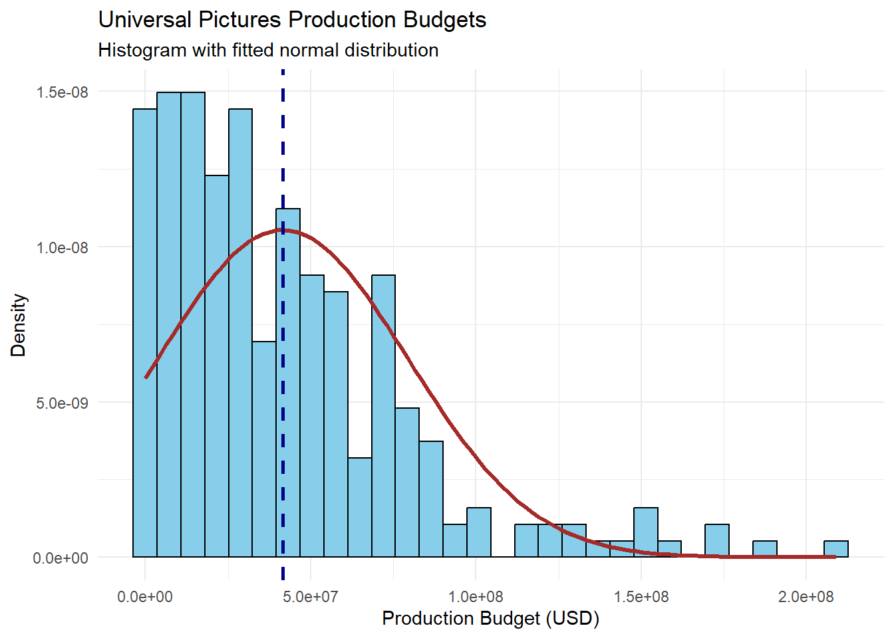
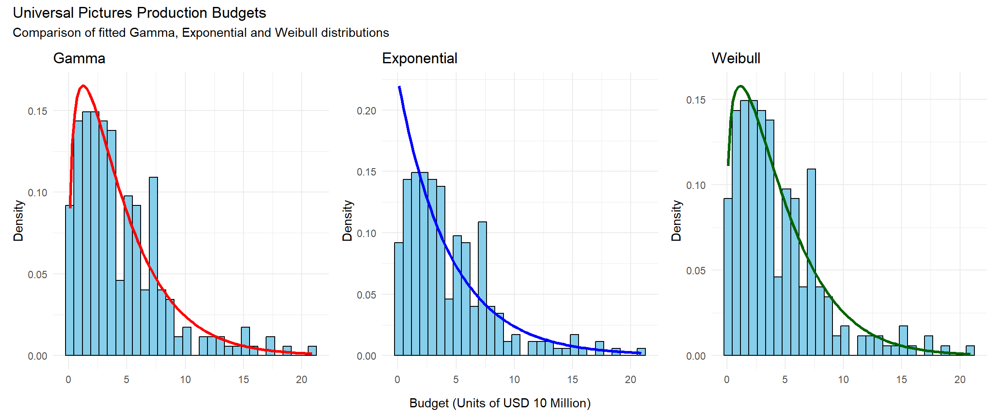
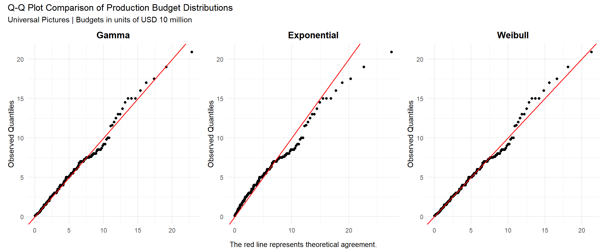
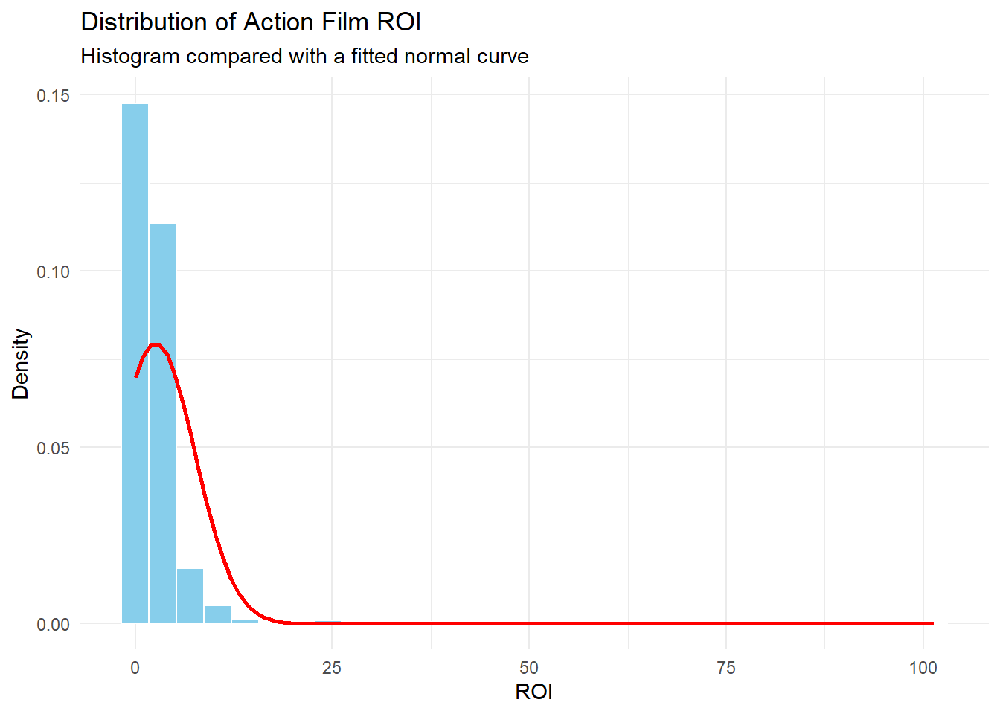

Task 3
Task 3
Part A
Universal Pictures was selected as the external benchmark for Meridian Pictures because its historical production budgets provide a reference point for understanding competitor spending. After filtering the dataset to Universal Pictures films and excluding records with missing, non-finite or non-positive budgets, 260 films were retained for the descriptive analysis.
The summary statistics show a mean production budget of approximately $41.57 million, a median of $30.50 million, and a standard deviation of approximately $37.89 million. The mean is higher than the median, suggesting that a relatively small number of high-budget films raise the average. The substantial standard deviation also indicates considerable variation in production spending across films.
These results suggest that a single average budget may not adequately represent the range of production costs. A probability distribution is therefore useful for modelling the variation in budgets and estimating the likelihood of different spending levels.
Assessment of the Normal Distribution
The histogram of Universal Pictures’ production budgets shows a positively skewed distribution. Most films have budgets concentrated at the lower end, while a smaller number of productions have substantially higher budgets, creating a long right tail.
The fitted normal curve does not adequately represent this pattern. A normal distribution is symmetric around its mean, whereas the observed budgets are strongly right-skewed. The dashed vertical line marks the mean budget of approximately $41.57 million, which lies to the right of the main concentration of observations.
This mismatch suggests that the normal distribution may be an unrealistic model for Universal Pictures’ production budgets. In particular, it may misrepresent the probabilities of lower and exceptionally high budgets. Alternative distributions designed to accommodate positive, right-skewed data should therefore be considered.
Choice of the alternative distribution and modelling
To identify a realistic probability model, normal, log-normal, Gamma, Exponential and Weibull distributions were considered. Their fitted curves and Q-Q plots were used to assess how closely the theoretical distributions represented the observed budgets, while AIC was used to compare their relative fit. The final model will be selected based on the AIC results and supporting diagnostic plots.
Note :Budgets were then divided by 10,000,000 to improve numerical convenience during model estimation while preserving their relative distribution.
Graphical Representation of Model Choice
Figure 1 compares the Gamma, Exponential and Weibull distributions fitted to Universal Pictures’ production budgets. The observed budgets are positively skewed, with most films concentrated at lower budget levels and a smaller number of films having substantially higher budgets.
The Gamma and Weibull distributions appear to capture the overall shape of the histogram reasonably well, including its peak and long right tail. The Exponential distribution declines more sharply from the lower end and appears to represent the concentration of budgets around the peak less accurately.

The Figure 2 compare the observed production budgets of Universal Pictures with the fitted Gamma, Exponential and Weibull distributions. The Gamma and Weibull distributions align more closely with the reference line across most of the budget range, although both deviate for higher-budget films. The Exponential distribution shows greater deviation, suggesting a weaker fit. Overall, the plots indicate that Gamma and Weibull are more suitable for modelling production budgets, with Gamma appearing to provide a slightly better fit.

Comparing the AIC for Decision making
The AIC results indicate that the Gamma distribution provides the best relative fit for Universal Pictures’ production budgets, with a score of 1201.090. The Weibull distribution performs almost equally well (1201.542), while the Exponential distribution has a higher AIC (1213.346), indicating a weaker fit. For Meridian Pictures, Gamma is therefore the preferred model for estimating historical budget patterns, although Weibull remains a reasonable alternative.
| Comparison of Fitted Distributions | |
| Akaike Information Criterion (AIC) | |
| Distribution | AIC Value |
|---|---|
| Gamma | 1,201.090 |
| Exponential | 1,213.346 |
| Weibull | 1,201.542 |
| Lower AIC values indicate a better relative model fit. | |
Part B
Action films from all studios were selected to assess the downside risk of the Action genre. The data was checked for missing, zero, negative and infinite values across numeric variables.
Films with zero budgets were identified because ROI cannot be reliably calculated when the budget is zero. Missing and infinite ROI values were excluded from the analysis, while valid zero and negative ROI values were retained because they may represent genuine financial outcomes.
The 25th percentile of ROI was estimated using non-parametric bootstrapping with 15,000 resamples. This method repeatedly resamples the observed ROI values with replacement, without assuming a specific probability distribution.
The estimated 25th percentile was 0.5764, with a 95% confidence interval of 0.4963 to 0.6596. This suggests that the lower-performing quarter of Action films has an ROI threshold of approximately 0.5764, with uncertainty reflected in the confidence interval.
Part C
A normal parametric bootstrap was initially used to compare the results with the non-parametric method. The normal distribution accommodates both positive and negative ROI values, unlike the standard Gamma and Weibull distributions, which require strictly positive values. However, Figure 3 shows substantial right-skewness, suggesting that the normality assumption may not be appropriate.

As shown in Table 1, the non-parametric bootstrap estimates the 25th percentile at 0.5764, with a 95% confidence interval of 0.4963–0.6596, while the normal parametric bootstrap estimates it at −0.8080.
The non-parametric bootstrap is preferred because it preserves the observed distribution without assuming normality. For Meridian Pictures, this provides a more defensible estimate of lower-end ROI, supporting investment decisions that account for the actual variation in Action-film returns.
| Comparison of Action Film ROI Estimates | ||||
| 25th Percentile and 95% Confidence Intervals | ||||
| Estimation Method | Estimated Q25 | Lower Limit | Upper Limit | Assessment |
|---|---|---|---|---|
| Non-parametric bootstrap | 0.5764 | 0.4669 | 0.6763 | Preferred: preserves the observed ROI distribution |
| Normal parametric bootstrap | −0.8080 | −1.3247 | −0.2738 | Less suitable: assumes normally distributed ROI |